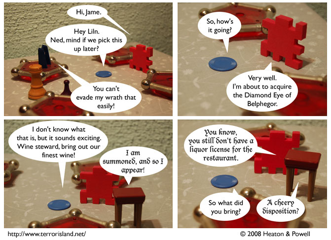

Strip #313
— Wednesday, June 11, 2008
Maybe they can evade his wrath that easily.
Notes, Thoughts, &c.
Ben’s Notes
As you know, the wine steward is a talking stool possessed by Jamezu, who was the demon created when Sid and Stephen forcibly merged the two demons Buerzu and Demon-Jame together. Probably. I didn’t actually check the archives on this one, but I think I’m remembering it right.
Lewis’s Notes
Some of you may recall that the stool used to alternate fonts between Herculanum and Papyrus, due to the merged demons. Over time, merged demons stop oscillating between two different fonts, and arrive at the mathematical average of their previous fonts, in this case, Lucida Blackletter. Feel free to check Ben’s math on that, but we’re pretty sure we got it right.